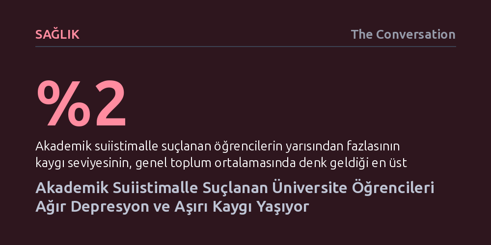

SAGLIK · The Conversation · 2026-09-08
Akademik suiistimalle suçlanan üniversite öğrencilerinin yarısından fazlası, genel nüfusun en kırılgan yüzde 2'lik dilimine denk gelen aşırı şiddetli kaygı yaşıyor. Araştırma, güvenilmez yapay zekâ dedektörlerine dayanan soruşturmaların öğrencilerde ağır depresyon ve işlev kaybına yol açtığını gösteriyor.
Yapay zekâ tespit araçlarının güvenilmezliğine dayalı kopya suçlamalarının sıradan bir idari disiplin süreci olmadığını, öğrencilerin ruh sağlığında klinik düzeyde ağır hasarlar bırakabildiğini ortaya koyuyor.

Üretken yapay zekâ teknolojilerinin eğitim hayatına hızla girmesi, üniversitelerde kopya ve intihal şüphelerini daha önce görülmemiş bir boyuta taşıdı. Birçok akademisyen öğrencilerin metinlerini denetlemek için yapay zekâ tespit programlarına başvururken, bu algoritmaların ürettiği hatalı sonuçlar yüzünden haksız yere suçlandığını belirten öğrencilerin sayısı günden güne artıyor. Üniversiteler akademik dürüstlüğü korumak adına resmi soruşturma mekanizmalarına sahip olsa da bu süreçlerin öğrencilerin psikolojik sağlığı üzerindeki bedeli uzun süre göz ardı edildi.
Akademik suiistimal suçlamalarıyla karşılaşan öğrencilerin yaşadıkları şimdiye kadar çoğunlukla kişisel anekdotlar düzeyinde kalmış, konunun duygusal boyutu bilimsel araştırmalarda yeterince incelenmemişti. Soruşturmaların gizlilik esasıyla yürütülmesi araştırmacıların bu durumdaki öğrencilere ulaşmasını zorlaştırsa da Avustralya'da yürütülen yeni bir çalışma, kapalı kapılar ardındaki psikolojik yıkımı ilk kez somut verilerle gün yüzüne çıkardı.
Araştırmacılar, iki Avustralya üniversitesinde intihal konusunda 771 öğrencinin katıldığı geniş kapsamlı bir anket düzenledi. Bu gruptan daha önce resmi bir akademik suiistimal soruşturması geçirdiğini belirten 22 öğrenci, deneyimlerini ve bu süreçte hissettikleri depresyon, anksiyete ve stres düzeylerini ölçen klinik testleri yanıtladı. Elde edilen veriler, hem geçmiş araştırmalarda soruşturma geçirmemiş 1.000'den fazla öğrencinin puanlarıyla hem de 2.000'i aşkın Avustralyalı yetişkinin psikolojik normlarıyla karşılaştırıldı.
Ortaya çıkan tablo araştırmacıların öngördüğü stres seviyelerinin çok ötesine geçti. Hakkında soruşturma yürütülen öğrencilerin yarısından fazlası, genel toplum ortalamasının yalnızca en üst yüzde 2'lik diliminde görülen "aşırı şiddetli" kaygı düzeyleri bildirdi. Katılımcıların yarısı aynı zamanda ağır depresyon belirtileri sergilerken, incelenen 22 öğrenci arasında ruh hali normal sınırlar içinde kalabilen yalnızca üç kişi oldu.
Araştırmanın öne çıkardığı bir diğer kritik bulgu, suiistimal suçlamalarıyla yüzleşen öğrenciler arasında ana dili İngilizce olmayanların oranının yüksekliği oldu. Bu durum, yabancı ve uluslararası öğrencilerin kopya iddialarında orantısız biçimde hedef alındığını gösteren mevcut literatürü doğruluyor. Üstelik bu grubun psikolojik danışmanlık hizmetlerine başvurma olasılığının yerel öğrencilere kıyasla çok daha düşük olması, yaşanan duygusal yükü daha da ağırlaştırıyor.
Öğrencilerin paylaştığı deneyimler, idari sürecin ne denli yıpratıcı olduğunu açıkça ortaya koyuyor. Kimi öğrenciler doğru kaynak göstermeyi bu süreçte öğrendiğini belirtse de çoğu öğrenci üniversite yönetiminin sert ve ilgisiz tavrından şikayet etti. Katılımcılardan birinin ifadesi yaşanan çaresizliği özetliyor: "Sınavların stresi ve soruşturma süreciyle birlikte artık işlevimi sürdüremez hale gelmiştim." Söz konusu öğrenci, aşırı anksiyete nedeniyle tek başına yaşayamayacak duruma geldiğini ve geçici olarak ailesinin evine dönmek zorunda kaldığını aktardı.
Araştırma, üniversitelerin güvenilmez kanıtlara ve hata payı yüksek yapay zekâ dedektörlerine dayanarak soruşturma başlatmaktan vazgeçmesi gerektiğini gösteriyor. Öğrencileri sürekli şüpheli konumuna sokmak yerine, ders değerlendirme yöntemlerinin baştan tasarlanması gerekiyor. Ödev formatlarının yapay zekâyla suistimale açık yapısını dönüştürmek; gözetimli sınavlara, sınıf içi sunumlara ve sözlü anlatımlara ağırlık vermek haksız suçlamaların önüne geçebilir.
Resmi bir soruşturmanın zorunlu olduğu hallerde ise üniversitelerin cezalandırıcı bir bürokrasi yerine eğitici bir yaklaşım benimsemesi şart. Soruşturma süreçlerinin gereksiz yere uzatılmaması, belirsizliğin azaltılması ve öğrencilere psikolojik destek imkanlarının proaktif biçimde sunulması hayati önem taşıyor. Akademik dürüstlüğü koruma çabası, öğrencilerin ruh sağlığını kalıcı olarak feda etme pahasına yürütülmemelidir.